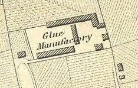

Wednesday, July the 14th, 2004
back to: title, date or indexes
“Dear Mr Key,” writes Poppy Nisbet, “I am worried that you and the other trusting folk at Hooting Yard have been seriously duped. I refer, of course, to your illustration of Mr Dust visiting the Pang Hill Orphanage (10th July). As he is depicted, Mr Dust has a suspicious halo, and the Pang Hill tinies look very rosy and well fed…Ah! I hear you say, but the Pang Hill gruel is second to none, and many have enjoyed good health as a result of its nourishing qualities! This may be, but it doesn't explain the tots' pious demeanor with hands in prayerful attitude or rosy crowns. Gruel is not God!”
Ms Nisbet will be pleased to hear that we take accusations of dupery, hoaxing and suchlike shenanigans very seriously, and upon receipt of her letter we immediately appointed a special investigator to look into the matter. Rastus Blot, a diminutive but effective confidential agent, was recommended to us by Mrs Gubbins. Working with admirable speed, Agent Blot presented us with a fifty-page report, the conclusion of which reads as follows:
There can be no doubt in my fuming brain that the man shown in the picture is Mr Dust the glue manufacturer. If you were to place your ear next to my skull you would probably be able to hear the synapses twang and whirr as my breathtaking intellect zipped into Supersonic Mode. It is no coincidence that the electrical impulses emitted by my cranium are enough to fell a bison at two hundred yards. Well, perhaps not a bison, but something smaller, an infant walrus perhaps, or a stoat. Now, in closing, may I politely suggest that you look very, very carefully at the subjoined map. If optically enhanced—like one of those grey, impossibly grainy photographs taken in Dealey Plaza on 22nd November 1963—you will be able to see Mr Dust sitting at his desk in his office, and you will note that he looks identical to the picture reproduced last Saturday. What Poppy Nisbet terms a “suspicious halo” is quite simply an exciting circular lozenge.
